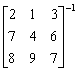

3x3逆矩陣的計算
計算:

按2ndF MODE 2再按 2 = 1 = 3 = 1 =
7 = 4 = 6 = 0 =
8 = 9 = 7 = 0 = (顯示x=-0.65) = (顯示y=-0.025) = (顯示z=0.775)= =
= = = 0 =
= = = 1 =
= = = 0 = (顯示x=0.5) = (顯示y=-0.25) = (顯示z=-0.25) = =
= = = 0 =
= = = 0 =
= = = 1 = (顯示x=-0.15) = (顯示y=0.225) = (顯示z=0.025) = =
完結後，按2ndF MODE 0 返回正常模式。
所以
相關資料:
二階逆矩陣的計算 ( 2×2 inverse matrix)
二階矩陣特徵多項式 ( Characteristic polynomial of 2×2 matrix)
二階矩陣特徵值 (Eigenvalues of 2×2 matri
3x3伴隨矩陣計算 (應用內置聯立三元一次方程 ) (3 × 3 Adjoint Matrix)
3x3逆矩陣乘法 (應用內置聯立三元一次方程 ) (3 × 3 Inverse matrix multiplication)
聯立三元一次方程 (Simultaneous Linear Equations in 3 unknowns)